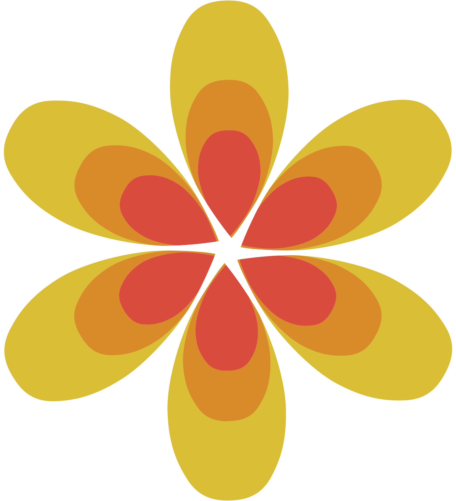
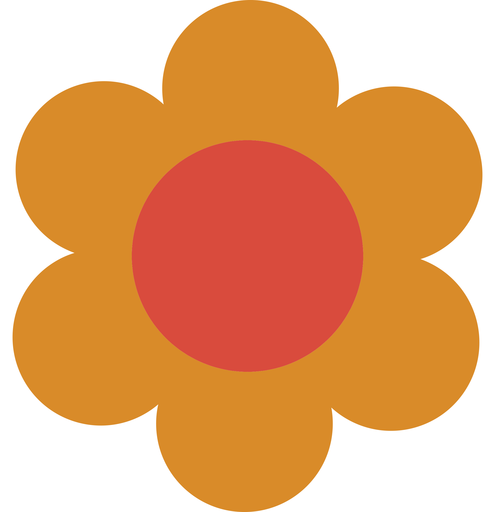

Tips duurzame kleding
Hoe kan je zelf bijdragen aan en beter milieu op het gebied van kleding?
Koop tweedehands
Er zijn tegenwoordig overal vintage- en kringloopwinkels te vinden met leuke, betaalbare en duurzame kleding en spulletjes. Een goed voorbeeld hiervan in Amsterdam is Marbles Vintage :)
Fix het of wees creatief
Zit er een gat in je favoriete shirt? Kijk eerst of er nog een mogelijkheid is om het te redden. Door een beetje handigheid met een naaimachine is het meestal zo weer opgelost. Mocht je zelf niet zo handig daarmee zijn, is er vast een persoon of winkel in de buurt die hier wel raad mee weet. Als de kleding echt niet meer te redden valt, kun je er altijd nog creatief mee bezig gaan en de stof gebruiken om iets nieuws te creëren.
Geef het weg of doneer het
Heb je kleding die je niet meer draagt; gooi het niet weg, maar geef het weg! Misschien is er wel iemand in je omgeving waar het wel iets voor is. Ook kan je het doneren aan een winkel of een goed doel. Verder kan je het plaatsen op een app waar tweedehands spullen verkocht worden, zoals Marktplaats of Vinted.
Duurzame merken
Mocht je toch eerstehands kleding willen kopen, zijn er altijd mogelijkheden. Ook al is het grootste gedeelte van de kleding fast fashion, zijn er ook genoeg duurzame merken waar je uit kan kiezen, zoals Stella McCartney, Etsy, Pact, Fair Indigo en Mud Jeans. Let op; deze zijn meestal wel een stuk duurder dan Fast Fashion merken, maar hier kan je langer mee doen en op deze manier krijg je dus wel waar voor je geld.